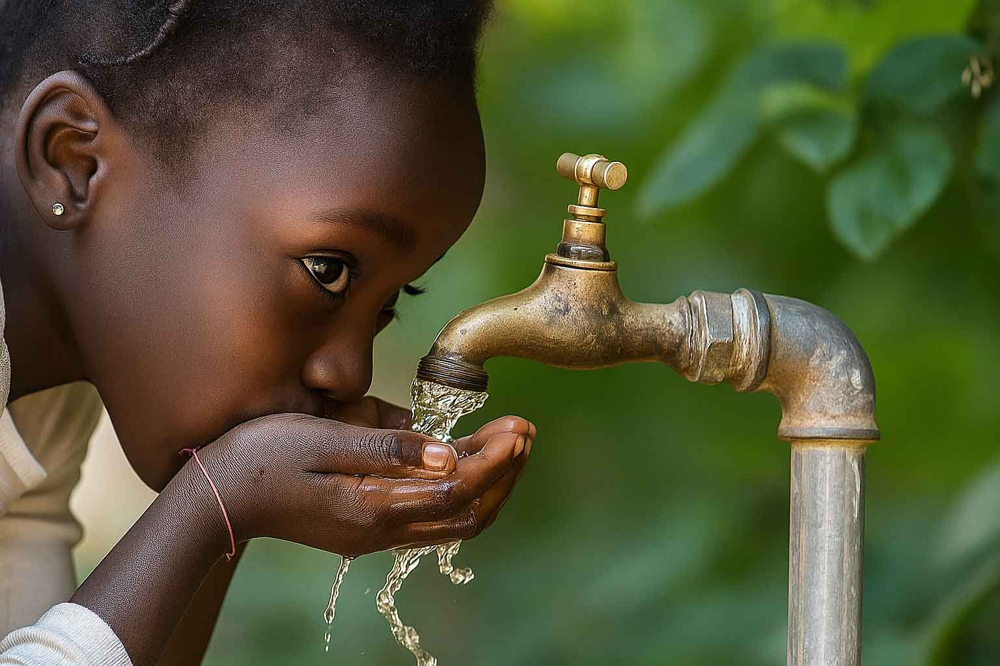
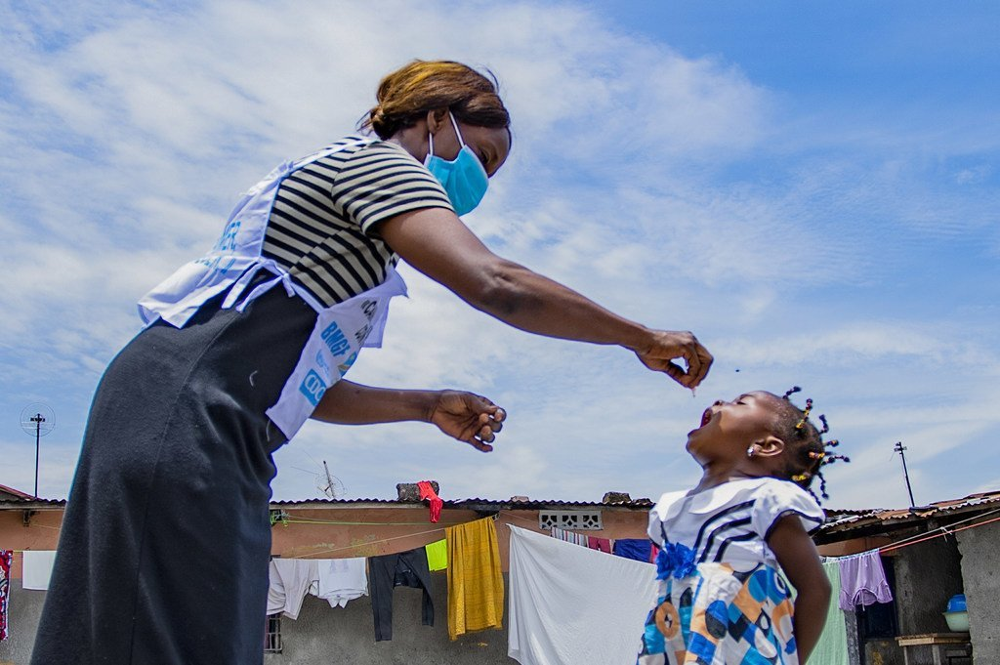

Construction et asphaltage d'une route de transport agricole près de Murundu
Ce projet vise à améliorer les infrastructures de transport dans la région de Murundu pour faciliter le commerce agricole. La route de 15 km permettra de connecter les zones de production aux marchés régionaux.
Détails du projet
- Longueur: 15 km
- Budget: 5 millions USD
- Durée: 18 mois
- Bénéficiaires: 50 000 personnes

Mise en disponibilité de l'eau potable dans les milieux ruraux
Initiative de l'AGDC pour fournir un accès durable à l'eau potable dans 50 villages ruraux de la province. Le projet inclut la construction de forages et de systèmes de distribution.
Avancement
65% complété (26/50 villages)
Impact
Réduction des maladies hydriques de 70% dans les zones couvertes. Amélioration des conditions de vie pour plus de 100 000 personnes.

Programme de vaccination des enfants contre la rougeole
Campagne nationale visant à vacciner 2 millions d'enfants de 6 mois à 5 ans contre la rougeole et d'autres maladies évitables.
Stratégie
- Vaccination mobile dans les zones reculées
- Sensibilisation communautaire
- Formation du personnel médical
- Suivi et évaluation
Résultats préliminaires
1.2 million d'enfants vaccinés à ce jour. Diminution de 40% des cas signalés depuis le début de la campagne.
Programme d'assainissement dans tous les secteurs
Initiative globale pour améliorer les conditions d'hygiène et d'assainissement dans l'ensemble de la province. Le programme inclut la construction de latrines, la gestion des déchets et l'éducation communautaire.
Composantes
- Construction de 10 000 latrines familiales
- Mise en place de 50 centres de collecte des déchets
- Formation de 200 agents communautaires
- Campagnes de sensibilisation
Partenaires
Ministère de la Santé, UNICEF, Banque Mondiale, ONG locales